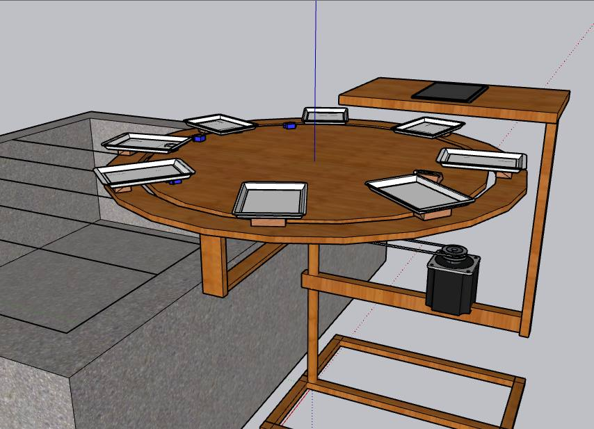

Gradifier
Capstone · builtAn automated banana grading and sorting machine with its own management web app. A camera classifies each banana hand into an export grade, and the machine drops it into the matching bin while the dashboard tracks every batch by farm.
- Vision
- YOLOv8 segmentation, PyQt5 operator app with threaded camera and serial pipeline
- Hardware
- Arduino Mega driving the conveyor and 6 servo drop gates; ESP8266 weight node reporting to Firebase
- Web app
- PHP + MySQL progressive web app with live data over SSE, Chart.js analytics, PDF reports, installable offline
- Grades
- 25BCP30BCP33BCP30TRIF36TRIF38TR
